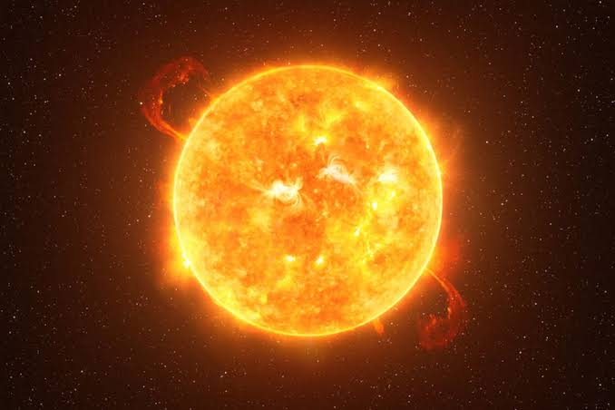

☀️ Matahari
Tema: Tata Surya

Tentang Matahari
Matahari adalah bintang yang berada di pusat Tata Surya. Matahari menjadi sumber energi utama bagi planet-planet dan benda langit lainnya yang mengelilinginya.
Kenapa Matahari Penting?
Energi dari Matahari sangat penting bagi kehidupan di Bumi. Cahaya dan panas Matahari membantu berbagai proses yang terjadi di Bumi.
💡 Tahukah Kamu?
Matahari merupakan salah satu dari sangat banyak bintang yang ada di alam semesta.